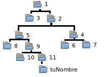
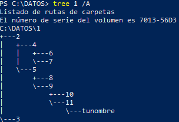
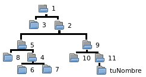

Ejercicios PowerShell comandos#
Lee la teoría de PowerShell y realiza los siguientes ejercicios.
Ejercicio 1: procesos y listados#
Desde PowerShell inicia notepad, encuentra cuál es el Id del proceso y páralo.
Ejecuta el comando
echo tunombre $(date).Sube un pantallazo1.
Responde a las siguientes preguntas:
¿Cómo listarías todos los archivos que empiezan por l del directorio
C:\Windows\System32\?¿Cómo listarías todos los archivos que empiezan por l del directorio
C:\Windows\System32\y solo tienen 5 caracteres?¿Cómo listarías todos los archivos que terminan en exe?
Tu home en Windows está en
$home. ¿Dónde está?¿Cómo te desplazarías a ella?
¿Cómo listarías las carpetas y archivos ocultos de tu home?
Ejercicio 2: árbol de directorios#
Haz el siguiente esquema de directorios:

Si hacemos tree 1:

Intercambia la carpeta 9 por la 4 como se indica en la figura:

Ejecuta el comando
tree 1 /Ay sube un pantallazo2.Busca la carpeta que has creado con tu nombre utilizando un comando que vimos en la teoría y sube un pantallazo3.
Ejercicio 3: servidor SSH#
Instala el servidor SSH y conéctate desde tu ordenador a la máquina virtual de Windows. Una vez dentro ejecuta los siguientes comandos:
ipconfig
powershell
ls
Haz un pantallazo4 del último comando.
Ejercicio 4: ayuda de comandos#
Guarda las ayudas de los comandos dir, copy y move en un archivo llamado ayuda.txt.
Haz que salgan por pantalla solo las líneas que contengan la palabra Get del archivo ayuda.txt. Sube un pantallazo5 de la salida.
Haz que salgan las 3 últimas líneas del archivo ayuda.txt. Sube un pantallazo6 de la salida.
Haz que salga la línea 10 del archivo ayuda.txt; en el caso de que esté vacía saca la 11, o la 12... Sube un pantallazo7 de la salida.
Ejercicio 5: Chocolatey#
Chocolatey es un gestor de paquetes de línea de comandos para Microsoft Windows. Utiliza la infraestructura de empaquetado de NuGet y PowerShell para simplificar el proceso de descarga e instalación de software.
Para instalar Chocolatey, ejecuta como administrador la siguiente instrucción:
Set-ExecutionPolicy Bypass -Scope Process -Force
iex ((New-Object System.Net.WebClient).DownloadString('https://chocolatey.org/install.ps1'))
Una vez instalado, instala el editor nano o vi:
choco install nano
choco install vim
Crea el archivo llamado archivo.dat con el editor que hayas instalado, escribe tu nombre y sube un pantallazo8 de los siguientes comandos:
type archivo.dat
Test-Path -Path archivo.dat
Ejercicio 6: profile#
Los profiles son un script que se ejecuta cuando se inicia PowerShell. También se puede usar un perfil si quieres personalizar el entorno, cambiar los colores de fondo, etc. PowerShell aplicará estos cambios a cada nueva sesión que inicie.
La ruta del perfil de PowerShell del usuario actual la puedes ver con echo $profile. Para cambiar tu profile, si no existe, crea el siguiente archivo:
vi $profile
Escribe al final:
echo "Hola tu nombre"
date
Abre una nueva sesión y sube un pantallazo9 donde se vea el mensaje personalizado.
Responde a la siguiente pregunta: en el caso de que quisiéramos cambiar el profile de todos los usuarios, ¿cuál sería el archivo que tendríamos que cambiar?
Ejercicio 7: alias#
Un alias es un nombre alternativo para un cmdlet o para un elemento de comando, como una función, un script, un archivo o un archivo ejecutable. Puedes usar el alias en lugar del nombre del comando en cualquier comando de PowerShell. Para buscar todos los alias de PowerShell disponibles en el entorno, usa el cmdlet Get-Alias.
Crea el alias llamado mostrar, que tiene que mostrar todas las líneas del archivo que recibe como argumento. Haz que esté presente cada vez que inicies una sesión de PowerShell y haz un pantallazo10 del comando Get-Alias donde aparezca el nuevo alias que has creado.